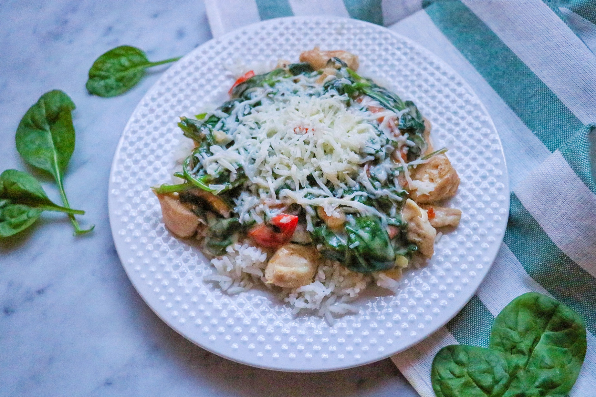

Turkey Meatball Stew

Description
This tasty quick spin on chicken Florentine is colorful and exciting. Serve together with your choice of rice, potato, or couscous, my favorite.
Ingredients
- cooking spray
- 1 pound 93% lean ground turkey
- 1 large egg, lightly beaten
- 2 tablespoons minced fresh parsley
- 1 teaspoon Worcestershire sauce
- 1 teaspoon garlic powder
- ½ teaspoon Italian seasoning
- ½ teaspoon onion powder
- 1 pinch salt and ground black pepper to taste
Steps
- ¼ cup olive oil
- 1 medium onion, chopped
- 2 stalks celery, chopped
- 2 (14.5 ounce) cans fire-roasted diced tomatoes, undrained
- 3 cups low-sodium chicken broth
- 2 cups cubed peeled potatoes
- 1 cup peeled, chopped carrots
- 1 cup frozen peas
- 1 teaspoon dried basil
- ½ teaspoon crushed red pepper flakes (Optional)